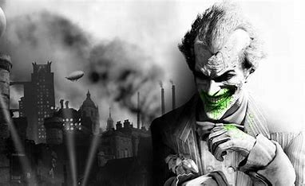
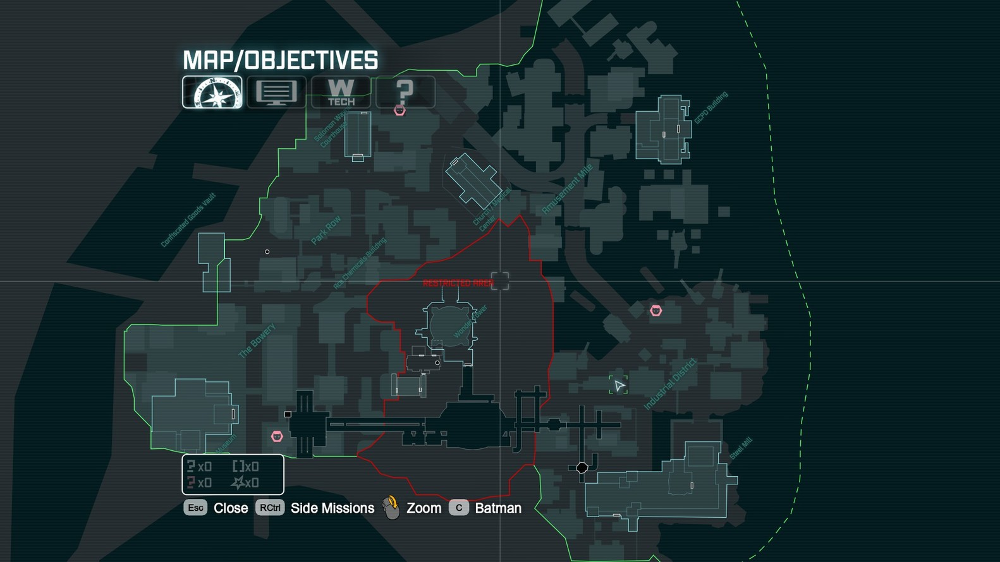

Introducción
El juego se presenta desde una perspectiva en tercera persona con un enfoque principal en las habilidades de combate y sigilo de Batman, sus habilidades de detective y los dispositivos que se pueden usar en el combate y la exploración. Batman puede moverse libremente por las instalaciones de Arkham Asylum, interactuar con personajes y realizar misiones, y desbloquear nuevas áreas progresando en la historia principal u obteniendo nuevo equipo. El jugador puede completar misiones secundarias fuera de la historia principal para desbloquear contenido adicional y artículos coleccionables. El combate se centra en encadenar ataques contra numerosos enemigos mientras evita daños, mientras que el sigilo le permite a Batman ocultarse alrededor de un área, usando dispositivos y el entorno para eliminar enemigos silenciosamente.
Curiosidades
- Batman Arkham City está lleno de easter eggs y referencias a otras películas, cómics y juegos de Batman. Por ejemplo, hay un edificio que se parece al Hotel Monarch de la película The Dark Knight, y una tienda de cómics llamada «Amusement Mile Comics», que es una referencia a una ubicación similar en los cómics de Batman.
- Los personajes de Batman Arkham City tienen historias fascinantes y detalles interesantes que los hacen únicos. Por ejemplo, el Pingüino tiene una colección de paraguas temáticos, y Catwoman puede «robar» objetos valiosos mientras lucha contra los enemigos.
- Hay varios secretos ocultos en el mapa de Batman Arkham City, como misiones secundarias y áreas secretas que los jugadores pueden descubrir. Por ejemplo, hay una misión secundaria en la que los jugadores pueden encontrar y capturar a un grupo de gatos callejeros.
- El desarrollo de Batman Arkham City fue un proceso largo y complicado. El equipo de Rocksteady Studios trabajó durante más de dos años en el juego, y tuvo que enfrentarse a numerosos desafíos técnicos y creativos. Sin embargo, el resultado final fue un juego impresionante que ha sido alabado por su historia, jugabilidad y gráficos.
Aliados
Robin
Tim Drake, también conocido como Robin, es el joven compañero de Batman. Es experto en artes marciales y posee habilidades de detective casi tan buenas como las de Batman. En Arkham City, Robin juega un papel importante en ayudar a Batman a combatir el crimen y mantener el orden.
Catwoman
Selina Kyle, conocida como Catwoman, es una aliada ambigua que a veces ayuda a Batman y otras veces persigue sus propios intereses. En Arkham City, Catwoman tiene su propia historia y misiones que proporcionan una perspectiva diferente sobre los eventos en el juego.

Nightwing
Nightwing, cuyo verdadero nombre es Dick Grayson, fue el primer Robin antes de asumir su propia identidad como Nightwing. Es un combatiente experto y un aliado confiable de Batman en la lucha contra el crimen en Gotham City.
El Villano Principal
El Joker es el villano principal en Batman: Arkham Asylum. Es conocido como el archienemigo de Batman y uno de los villanos más icónicos del universo de DC Comics. En el juego, el Joker organiza un plan para tomar el control del Asilo Arkham y atrapar a Batman dentro de él.
El Joker utiliza su inteligencia y su imprevisibilidad para manipular a otros villanos y a los guardias del asilo, creando una serie de desafíos y trampas para Batman. Su objetivo final es usar el compuesto químico Titan para crear un ejército de supervillanos mejorados genéticamente y desatar el caos en Gotham City.
Mapa de Arkham City
Como puedes ver, el mapa es mas grande comparado al de su antecesor, la unica diferencia es que no puedes entrar a todos los edificios.